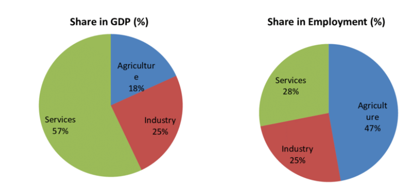

ANALYSIS OF INDIAN ECONOMY
Last updated on: May 10, 2024
Features of Indian economy:
- Mixed: A mixed economy is an economic system that accepts both private
businesses and nationalized government services, like public utilities, safety, military, welfare,
and education. A mixed economy also promotes some form of regulation to protect the public, the
environment, or the interests of the state.
-
Planned economy: A planned economy is a type of economic system where
the distribution of goods and services or the investment, production and the allocation of capital
goods takes place according to economic plans that are either economy-wide or limited to a category
of goods and services. A planned economy may use centralized, decentralized, participatory or
Soviet-type forms of economic planning.
-
Middle income: The category of newly industrialized country (NIC), newly industrialized
economy (NIE) or middle income country is a socioeconomic classification applied to several
countries around the world by political scientists and economists. They represent a subset of
developing countries whose economic growth is much higher than that of other developing countries;
and where the social consequences of industrialization, such as urbanization, are reorganizing
society.
-
Developing country: A developing country is a sovereign state with a less developed
industrial base and a lower Human Development Index (HDI) relative to other countries.
-
5th largest by nominal GDP
-
3rd largest by purchasing power parity (PPP)
-
4th largest consumer-market
Composition of Indian economy:

Industries in India:
References:
Indian economy introduction: https://en.wikipedia.org/wiki/Economy_of_India
Mixed economy definition: https://en.wikipedia.org/wiki/Mixed_economy
Planned economy definition: https://en.wikipedia.org/wiki/Planned_economy
Middle income definition: https://en.wikipedia.org/wiki/Newly_industrialized_country
Developing country definition: https://en.wikipedia.org/wiki/Developing_country
Structure of Indian economy: https://www.researchgate.net/figure/Structure-of-Indian-Economy_fig3_285596654
Industries in India: https://www.ibef.org/industry